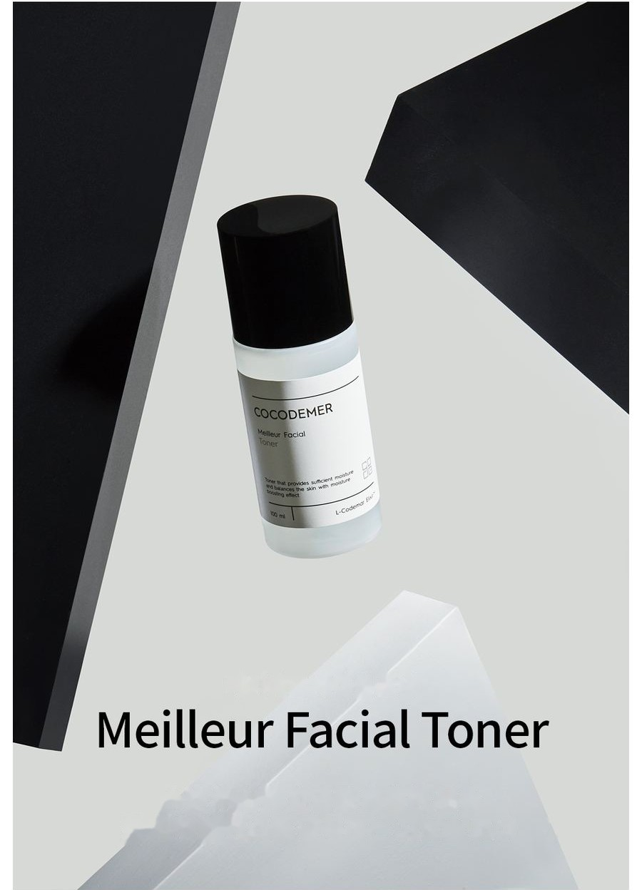
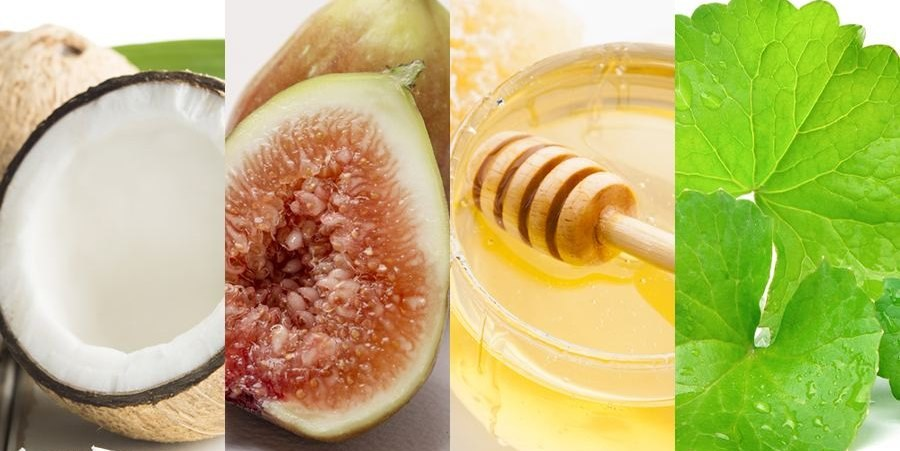
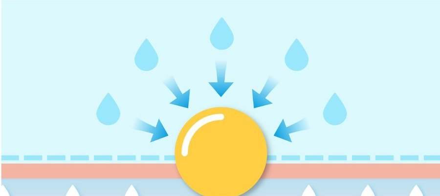

COCODEMER Meilleur Facial Toner
| Contenance | 100ml |
|---|---|
| Convient à | Tous types de peau |
| Technologie clé | L-CODEMAR ELIXIR™ |
| Fabricant · Distributeur responsable | JUNGCOS CO., LTD. / COCODEMER CO., LTD. |
Ce produit a été développé dans le cadre de notre gamme de cosmétiques sur mesure. Il n'est actuellement pas disponible à la vente. Pour toute demande concernant une nouvelle production ou un renouvellement du produit, veuillez passer par la rubrique Demande B2B.

Une lotion tonique très hydratante qui booste l'hydratation et aide à équilibrer la peau
Une lotion tonique très hydratante, à la sensation fraîche et au fini lisse et lumineux
Retient l'hydratation dans la peau pour un confort qui dure des heures, et la prépare dans les meilleures conditions à recevoir l'étape suivante.
La niacinamide et l'adénosine aident à améliorer la pigmentation et les rides en une seule étape.
Protège les protéines et les membranes cellulaires, principaux composants de la peau, en créant un environnement sain sous la surface, pour une peau claire et pleine de vitalité.
Un équilibre optimal entre plus de 80 % d'eau et 13 % d'ingrédients hydratants hydrosolubles limite au minimum les tiraillements. L'acide hyaluronique, la bétaïne et les agents apaisants végétaux Ficus Carica (Fig) Fruit Extract et Centella Asiatica Extract calment la peau et maintiennent l'hydratation toute la journée, la laissant ferme et rebondie.
Les protéines, principal composant de la peau, protègent les membranes cellulaires et créent un environnement sain sous la surface. Les oligosaccharides retiennent l'eau dans l'épiderme, protégeant contre la sécheresse et le stress extérieur. Ils réduisent également l'irritation des peaux fragiles et apportent une hydratation immédiate, aidant à soulager la sécheresse en profondeur.
* Les informations ci-dessus s'appliquent uniquement à l'ingrédient concerné.
Code de l'actif clé
- MoHydratationHydratant
- AwAnti-ridesAnti-âge
- WhÉclaircissementÉclaircissement
- TbSoulagement des imperfectionsSoulagement des imperfections
- BsBaseAdoucissement de la peau

80 % d'eau et 13 % d'humectants hydrosolubles forment un voile d'hydratation qui préserve la capacité de la peau à retenir l'eau et aide à apaiser la peau sensibilisée.
Il favorise la synthèse du collagène et de l'élastine, ce qui aide à améliorer les rides et à prévenir l'apparition de nouvelles rides. Il renforce aussi l'élasticité de la peau, aidant à améliorer la peau abîmée.
Un dérivé de la vitamine B3 hydrosoluble. Il inhibe l'activation de la tyrosinase pour bloquer la formation de mélanine et limiter la pigmentation, et il réduit les composés qui oxydent le collagène — illuminant le teint et aidant à prévenir les taches brunes.

Les oligosaccharides forment un film protecteur qui empêche l'évaporation de l'eau et protège contre la perte en eau. Une vitamine B active apaise la peau et renforce sa barrière, aidant à la garder saine et pleine de vitalité.
* Les informations ci-dessus concernent les ingrédients, et non le produit fini.
Voir la fiche ingrédient →
L-CODEMAR ELIXIR™
Technologie propriétaire de COCODEMER.
Notre technologie inégalée d'encapsulation par émulsion nano-gel multicouche maintient les actifs clés — eau de coco, phytostérols, 20 acides aminés et extrait de miel — en un complexe stable. Ce complexe est ensuite intégré dans une forme liposomale respectueuse de la peau, qui reproduit la structure même de la peau, afin de maximiser l'efficacité de la diffusion dans la peau.
L-Codemar Elixir™ renforce la cohésion entre les cellules cutanées. Il restaure une barrière altérée et forme un film protecteur résistant, pour une hydratation plus durable.

Texte de l'image ci-dessus
L-CODEMAR ELIXIR™
- EAU DE COCO
- EXTRAIT DE MIEL
- 20 TYPES D'ACIDES AMINÉS
- PHYTOSTÉROL

Texte de l'image ci-dessus
- Microbes, particules fines, poussières jaunes, polluants et pollution de l'air
- Perte en eau excessive
Peau abîmée
Des lipides intercellulaires endommagés affaiblissent les liaisons entre les cellules de l'épiderme
- Apport de lipides intercellulaires ↑
- Actifs
- Protège contre les agressions extérieures et les polluants
- Moins de perte en eau
Peau saine
Les lipides reconstitués restaurent la matrice intercellulaire → liaisons intercellulaires renforcées
Mode d'emploi
- Après le nettoyage, en première étape de votre routine, prélevez une quantité appropriée et étalez-la délicatement du centre du visage vers l'extérieur, en suivant le grain de la peau.
- Tapotez légèrement pour favoriser la pénétration.
* Si vous utilisez un coton, imbibez-le d'une quantité appropriée et passez-le sur la peau comme pour la lisser.
Une lotion tonique très hydratante, à la sensation fraîche et au fini lisse et lumineux
Retient l'hydratation dans la peau pour un confort qui dure des heures, et la prépare dans les meilleures conditions à recevoir l'étape suivante.
La niacinamide et l'adénosine aident à améliorer la pigmentation et les rides en une seule étape.
Protège les protéines et les membranes cellulaires, principaux composants de la peau, en créant un environnement sain sous la surface, pour une peau claire et pleine de vitalité.
Un équilibre optimal entre plus de 80 % d'eau et 13 % d'ingrédients hydratants hydrosolubles limite au minimum les tiraillements. L'acide hyaluronique, la bétaïne et les agents apaisants végétaux Ficus Carica (Fig) Fruit Extract et Centella Asiatica Extract calment la peau et maintiennent l'hydratation toute la journée, la laissant ferme et rebondie.
Les protéines, principal composant de la peau, protègent les membranes cellulaires et créent un environnement sain sous la surface. Les oligosaccharides retiennent l'eau dans l'épiderme, protégeant contre la sécheresse et le stress extérieur. Ils réduisent également l'irritation des peaux fragiles et apportent une hydratation immédiate, aidant à soulager la sécheresse en profondeur.
80 % d'eau et 13 % d'humectants hydrosolubles forment un voile d'hydratation qui préserve la capacité de la peau à retenir l'eau et aide à apaiser la peau sensibilisée.
Il favorise la synthèse du collagène et de l'élastine, ce qui aide à améliorer les rides et à prévenir l'apparition de nouvelles rides. Il renforce aussi l'élasticité de la peau, aidant à améliorer la peau abîmée.
Un dérivé de la vitamine B3 hydrosoluble. Il inhibe l'activation de la tyrosinase pour bloquer la formation de mélanine et limiter la pigmentation, et il réduit les composés qui oxydent le collagène — illuminant le teint et aidant à prévenir les taches brunes.
Les oligosaccharides forment un film protecteur qui empêche l'évaporation de l'eau et protège contre la perte en eau. Une vitamine B active apaise la peau et renforce sa barrière, aidant à la garder saine et pleine de vitalité.
* Les informations ci-dessus concernent les ingrédients, et non le produit fini.
L-CODEMAR ELIXIR™
Technologie propriétaire de COCODEMER. Notre technologie inégalée d'encapsulation par émulsion nano-gel multicouche maintient les actifs clés — eau de coco, phytostérols, 20 acides aminés et extrait de miel — en un complexe stable. Ce complexe est ensuite intégré dans une forme liposomale respectueuse de la peau, qui reproduit la structure même de la peau, afin de maximiser l'efficacité de la diffusion dans la peau. L-Codemar Elixir™ renforce la cohésion entre les cellules cutanées. Il restaure une barrière altérée et forme un film protecteur résistant, pour une hydratation plus durable.
①Après le nettoyage, en première étape de votre routine, prélevez une quantité appropriée et étalez-la délicatement du centre du visage vers l'extérieur, en suivant le grain de la peau. ②Tapotez légèrement pour favoriser la pénétration. *Si vous utilisez un coton, imbibez-le d'une quantité appropriée et passez-le sur la peau comme pour la lisser.
| Contenu net (volume ou poids) | 100ml |
|---|---|
| Convient à | Tous types de peau |
| Durée de conservation / durée d'utilisation après ouverture | 30 mois à compter de la date de fabrication ; à utiliser dans les 12 mois suivant l'ouverture |
| Mode d'emploi | Après le nettoyage, en première étape de votre routine, prélevez une quantité appropriée, étalez-la uniformément sur le visage et tapotez légèrement pour qu'elle pénètre complètement. *Si vous utilisez un coton, imbibez-le d'une quantité appropriée et passez-le sur la peau en suivant son grain naturel. |
| Fabricant de cosmétiques | JUNGCOS CO., LTD. |
| Distributeur responsable | COCODEMER CO., LTD. |
| Pays d'origine | République de Corée |
| Liste complète des ingrédients (INCI) | Cocos Nucifera (Coconut) Water, Water, Methylpropanediol, Glycerin, 2,3-Butanediol, Butylene Glycol, 1,2-Hexanediol, Betaine, Niacinamide, Raffinose, Centella Asiatica Extract, Ficus Carica (Fig) Fruit Extract, Panthenol, Honey Extract, Carthamus Tinctorius (Safflower) Seed Oil, Hydrogenated Lecithin, Oenothera Biennis (Evening Primrose) Oil, Sodium Hyaluronate, Acetyl Hexapeptide-8, Adenosine, Alanine, Arginine, Aspartic Acid, Bioflavonoids, Caprylyl/Capryl Glucoside, Carbomer, Carnitine, Carnosine, Ceramide NP, Cetearyl Alcohol, Cetyl Ethylhexanoate, Citric Acid, Citrulline, Creatine, Glucosyl Hesperidin, Glutamic Acid, Glutamine, Glyceryl Caprylate, Glycine, Hydrogenated Phosphatidylcholine, Inositol, Isoleucine, Leucine, Methionine, Myristic Acid, Neopentyl Glycol Diheptanoate, Ornithine, Palmitic Acid, Palmitoyl Pentapeptide-4, Phenylalanine, Phytosterols, Polyglyceryl-10, Laurate, Polyglyceryl-10 Myristate, Polyglyceryl-2, Stearate, Polyquaternium-51, Polysorbate 20, Proline, Propanediol, Serine, Sodium Citrate, Sodium Polyacrylate, Squalane, Stearic Acid, Tartaric Acid, Threonine, Tranexamic Acid, Trehalose, Tryptophan, Tyrosine, Valine, Xanthan Gum, Fragrance (Parfum) |
| Approbation de cosmétique fonctionnel | Aide à illuminer la peau. Aide à améliorer les rides de la peau. |
| Précautions d'emploi | 1. En cas d'apparition de taches rouges, de gonflement, de démangeaisons ou d'autres réactions anormales sur la zone d'application pendant ou après l'utilisation, ou à la suite d'une exposition directe au soleil, consulter un spécialiste. 2. Éviter l'application sur une peau lésée ou présentant des plaies. 3. Conservation et manipulation a) Tenir hors de portée des enfants. b) Conserver à l'abri de la lumière directe du soleil. |
| Garantie de qualité | En cas de défaut, une indemnisation est accordée conformément aux normes de règlement des litiges de consommation publiées par la Commission coréenne du commerce équitable. |
| Service consommateurs | 010-3307-9341 / cocodemer@cocodemer.co.kr |
* Mentions obligatoires selon la réglementation coréenne sur l'étiquetage et la publicité des cosmétiques. Il s'agit d'une traduction de référence ; pour la déclaration certifiée des ingrédients, le CPSR ou le CoA, veuillez nous contacter via la demande B2B.